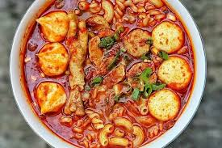

10 Resep masakan mudah dibuat dan enak
Kesibukan bukan halangan untuk tetap memasak. Karena memasak itu mudah, nggak ribet, praktis, dan cepat. Memasak bisa dilakukan oleh semua orang, baik wanita maupun laki-laki. Apalagi di era modern saat ini, banyak terdapat resep serba guna bisa kamu dapatkan dengan mudah, melalui handphone misalnya.
Kamu bebas menentukan masakan apa yang ingin kamu hidangkan untuk keluarga sekarang. Mulai dari yang tradisional hingga masakan modern dan kekinian. Nah, buat kamu yang ingin mengolah masakan modern, nggak perlu cemas. Sebab ada banyak pilihan masakan modern tapi cocok bagi kamu yang pemula.
Meskipun terkesan untuk pemula, tak perlu ragu, karena deretan masakan ini tetap punya cita rasa lezat dan menggugah selera. Bahkan ada pula lho, pilihan resep masakan modern ala hotel dan restoran terkenal. Dijamin keluarga akan senang dan betah di rumah seharian, makan masakanmu. Penasaran resep apa saja dan semudah apa membuatnya?
Berikut resep masakan yang bisa kalian pilih
1.Seblak kerupuk basah

Bahan-bahan
- 100 gram kerupuk aci
- 7 lembar daun caisim/sawi hijau
- 5 butir bakso sapi
- 1 butir telur
- Secukupnya air
- Secukupnya garam dan gula
bumbu yang dihaluskan
- 2 ruas kencur
- 2 butir bawang merah
- 1 butir bawang putih
- 5 buah cabe rawit merah (sesuai selera pedas)
- 3 buah cabe keriting merah
Cara Membuat
- Pertama, rendam dulu kerupuk dengan air biasa (kira-kira 30 menit) biar pas dimasak cepat lembek dan ga keras, lalu potong2 daun caisim dan bakso sapi sesuai selera
- Haluskan bumbu lalu tumis sampai harum, setelah harum tambahkan air kira-kira 1 gelas (mau dibanyakin airnya jg gpp klo mau berkuah kayak yg aku bikin), tunggu air sampai mendidih
- Masukan telur yg sebelumnya sudah di kocok lepas (kalau ga di kocok dulu bau amis) jadi wajib di kocok dulu yaa hehe
- Selanjutnya masukan kerupuk, bakso dan caisim, serta gula dan garam, masak hingga matang dan sajikan selagi hangat 😊
2. Ayam bakar
Bahan-bahan
- 1 ekor ayam kampung
- 1 ruas jahe, geprek
Bumbu ungkep :
- 4 siung bawang merah
- 2 siung bawang putih
- 2 buah kemiri
- 1 sdt ketumbar
- 1/2 sdt merica
- 1 ruas jahe
- 1 ruas kunyit
- 3 sdm gula merah sisir
- 7 sdm kecap manis
- 2 daun salam
- secukupnya Garam & kaldu bubuk
Cara Membuat
- Cuci bersih ayam. Kemudian rebus sebentar pake jahe geprek.
- Haluskan semua bumbu ungkep kecuali gula, garam, kecap, dan daun salam. Kemudian tumis dengan sedikit minyak sampai harum. Masukkan gula garam & daun salam nya. Beri air sedikit agar gula cepet larut.
- Masukkan ayam nya. Aduk rata & masak sebentar sampai bumbu agak meresap. Kemudian beri air kira2 2 gelas. Beri kecap dan aduk rata. Oya saya rekomendasikan pake kecap cap bango ya biar warna nya lebih cantik :)
- Biarkan sampai air menyusut sambil sesekali diaduk2. Angkat.
- Panaskan teflon. Bakar ayam pake api kecil saja. Bakar sampai permukaan ayam terlihat mengkaramel & kecoklatan. Angkat.
- Ayam bakar siap disajikan.
3.pepes ikan mas
Bahan bahan
- 1 kg ikan mas isi 5
- 1 buah jeniper
- 4 ikat daun kemangi
- 4 lembar daun salam
- 3 batang sereh geprek
- secukupnya garam,gula,dan kaldu jamur
- secukupnya daun pisan sobek-sabek dan bersihkan
- 15 buah bawang merah
- 9 buah bawang putih
- 20 buah cabe merah keriting
- 10 buah cabe rawit merah
- 5 buah kemiri matang
- 2 ruas jahe
- 4 kelingking kunyit
Cara memasak
- Siapkan daun kemanginya periki daunnya lalu cuci bersih
- Cuci bersih ikan mas beri jeniper aduk rata diamkan 10 menit lalu cuci berish lg Beri secukupnya garam diamkan 15 menit supaya meresap
- Tumis bumbu halus sampai harum dan matang masukan juga daun salam dan serehnya Beri garam gula dan kaldu jamur aduk rata jgn lupa koreksi rasa Setelah pas lalu matikan kompornya
- Masukan ikannya aduk rata diamkan sejenak sampai hangat
- Siapkan daun pisang 2 lembar beri daun kemangi lalu ikan dan beri daun kemangi lg di atasnya
- Bungkus dan sematkan ujung2nya dengan tusuk gigi Lalu presto selama 1 jam dihitung dr panci mendesis dengan api sedang Setelah matang matikan kompor dan diamkan jangan dibuka dulu sampai uap panaskan hilang (jangan dipaksakan dibuka karena bahaya) Setelah presto bisa dibuka lalu angkat
- Siap dihidangkan dengan sambel tarasi dan lalab
4.Mie nyemek sambal seblak
Bahan bahan
- 2 butir telur
- 2 buah indomie goreng
- 5 buah cabe rawit ijo
- 5 buah cabe rawit merah
- 5 buah cabe rawit orange
- 5 buah bawang merah
- 5 buah bawang putih
- 1 pcs bumbu kaldu ayam
- 450 ml air
- 1 sdm kecap
- 1 sdm saus
- 1 setengah kencur
- 5 buah sosis
Cara memasak
- Satukan semua bahan seperti, semua jenis cabai, bawang merah dan bawang putih.Halus kan dengan blender ataupun diulek
- Setelah dihaluskan, tumis bumbu dengan minyak goreng dan api sedang. Tumis hingga kecoklatan
- Setelah bumbu sudah matang, masukkan air 450ml. Aduk hingga rata, dan masukkan 2 butir telor aduk kembali hingga rata
- Jika sudah diaduk hingga rata, masukkan sosis yang sudah dipotong kecil-kecil
- Tunggu hingga mendidih, jika sudah mendidih. Masukkan mie, dan bumbu kaldu ayam. Aduk hingga rata, dan mie hingga setengah mateng (jangan sampe mateng bgt yaa)
- Jika sudah, mie nyemek bumbu seblak siap disajikan dengan nikmat dan ditaburi dengan bawang goreng. Selamat menikmatii, cocok disaat cuaca hujan ataupun panas
5.Omelette
Bahan-bahan
- 2 butir telur ayam
- 1/4 sdt garam
- 1/4 sdt lada bubuk
- Minyak secukupnya
- Saus dan mayonaise secukupnya
Cara memasak
- Kocok telur bersama semua bumbu hingga lembut.
- Panaskan 2 sdm minyak di teflon anti lengket.
- Tuang telur dan aduk-aduk sebentar. Jangan sampai terlalu lama nanti jadi goreng orak arik. Cukup aduk sesekali saja, untuk memberikan tekstur di bagian dalam omelet.
- Setelah itu sisihkan di sisi depan teflon, tunggu hingga agak matang, dorong telur dadar perlahan-lahan hingga setiap sisinya matang dan membentuk gulungan.
- Jika sudah membentuk gulungan, angkat.
- Sajikan omelet gulung dengan saus dan mayonaise secukupnya.
- Nikmati selagi hangat.
6.Mashed Potato
Bahan-bahan
- 250 gr kentang
- 200 ml susu cair
- 2 siung bawang putih
- 40 gr keju parut
- 1/2 sdt garam
- 1/2 sdt lada bubuk
- 1 sdm mentega
- 1 sdt oregano
Cara memasak
- Kupas kentang, cuci bersih, potong2 lalu rebus hingga matang, tambahkan 1/2 sdt garam pada saat merebusnya.
- Angkat, haluskan dengan bantuan garpu.Agar lebih halus lagi bisa gunakan saringan, hasilnya benar2 halus, sisihkan.
- Lelehkan mentega, tumis bawang putih hingga harum.
- Tuang susu dan keju aduk rata, gunakan api sedang cenderung kecil.
- Tambahkan garam dan lada bubuk aduk kembali, masak hingga sedikit mengental dan tercampur merata.
- Tuang saus creamy ke dalam kentang secara bertahap sambil terus di aduk.
- Tambahkan oregano aduk kembali, done, tinggal tata di piring saji dan tambahkan pelengkapnya sesuai selera.
7.Ayam goreng bawang putih
Bahan-bahan
- 1 kg Ayam potong kecil2,cuci,tiriskan
- 10 siung bawang putih
- 2 jempol jahe
- 2 Sdm saus tiram
- 2 Sdm Minyak wijen
- 1 Sdm Kecap asin
- 1 Sdm Kecap ikan
- 1 Sdm Kaldu bubuk
- 1 Sdt gula pasir
- 5 Sdm Tepung maizena
- 1 Butir Telur
Toping
- 15 siung bawang putih memarkan bersama kulitnya
Cara memasak
- Campur ayam yg sudah dipotong2 dg bumbu halus & bumbu cair,aduk rata.Masukan tepung maizena aduk rata,lalu masukan telur,aduk rata.Tempatkan di wadah tertutup,simpan kulkas semalaman.
- Keluarkan dr kulkas,goreng di minyak banyak yg sudah dipanaskan. Kalo sudah 1/2 matang masukan bawang putih yg sudah dimemarkan. Goreng terus sampai matang kecoklatan.
8.Nugget sambal bajak
Bahan-bahan
- 1 bungkus nugget kanjler crispy
- 7 buah cabe merah besar
- 15 buah cabe rawit hijau
- 5 buah bawang putih
- secukupnya garam
- secukupnya minyak goreng
- 2 buah bawang merah
Cara memasak
- Satukan cabe merah, cabe hijau bawang putih, bawa merah, dan garam secukupnya. Lalu, di ulek sampai halus
- Masak nugget kanzler, sampai coklat keemasan yah dengan minyak secukupnya
- Lalu, tumiskan bahan bahan sambal tadi dengan minyak secukupnya
- Jika, sambalnya sudah berubah warna agak kecoklatan (matang). Satukan nugget dengan sambal dan aduk hingga sambal merata dengan nugget
- Nugget sambal bajak siap disajikan dengan nasi yang masih anget
9.Penyetan Sambal Terasi Udang
Bahan-bahan
- 15 buah cabai rawit
- 10 siung bawang merah
- 5 siung bawang putih
- 4 buah cabai merah berukuran besar
- 2 papan tempe yang telah dipotong-potong
- 2 bungkus terasi udang
- 2 buah tomat
- 1/2 kg udang berukuran sedang yang telah dibersihkan
- garam secukupnya
- gula secukupnya
- minyak secukupnya
Cara memasak:
- Cuci bersih udang, kemudian rendam dengan garam dan irisan bawang putih.
- Panaskan wajan berisi minyak, lalu goreng udang sampai matang, lalu tiriskan.
- Masukkan semua bahan ke dalam wajan, kecuali terasi. Masak sampai setengah matang.
- Letakkan bahan sambal terasi di atas cobek, ulek sampai halus.
- Taruh udang di atas cobek, penyet sesuai selera dan sajikan!
10.Cumi Pedas Manis
Bahan-bahan
- 250 gram cumi
- 50 ml air
- 3 siung bawang merah yang diiris tipis
- 2 siung bawang putih yang diiris tipis
- 3 buah cabai merah yang diiris tipis
- 3 buah cabai rawit yang diiris tipis
- 1 buah cabai hijau yang diiris tipis
- 2 sendok makan saus tiram
- 1 buah bawang bombay yang telah diiris
- 1 sendok makan saus sambal
- 1/2 buah jeruk nipis
- minyak goreng secukupnya
- garam secukupnya
- gula secukupnya
- merica secukupnya
Cara memasak:
- Bersihkan cumi terlebih dahulu, kemudian lumuri dengan jeruk nipis agar tak amis.
- Siapkan wajan berisi minyak, tumis bawang merah, putih, dan bombay sampai harum.
- Tambahkan saus tiram, sambal, air gula, merica, garam, dan cumi.
- Aduk semua bahan sampai merata.
- Masukkan semua cabai ke dalamnya, aduk kembali.
- Sajikan cumi pedas manis bersama nasi.
Home